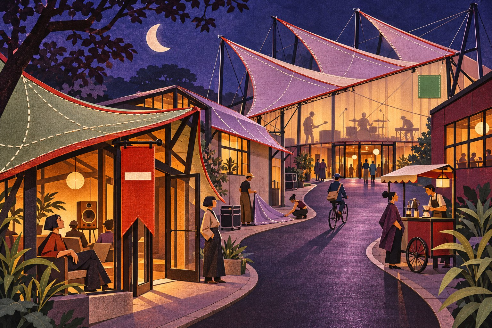
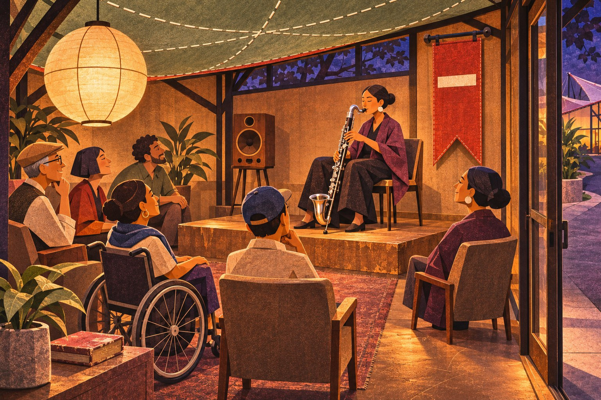
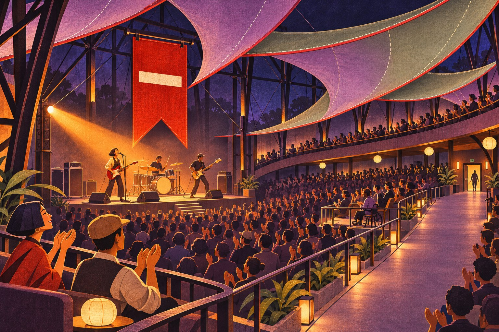
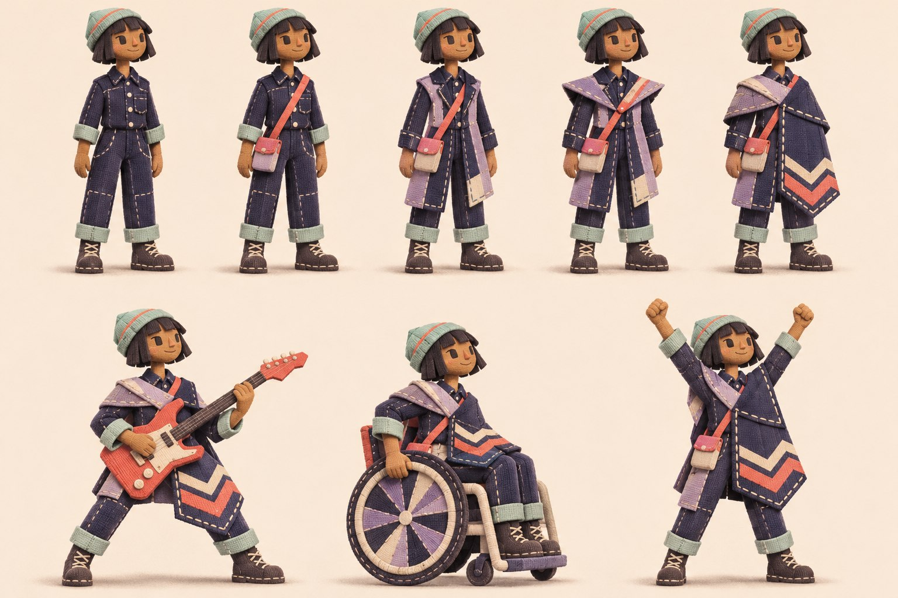
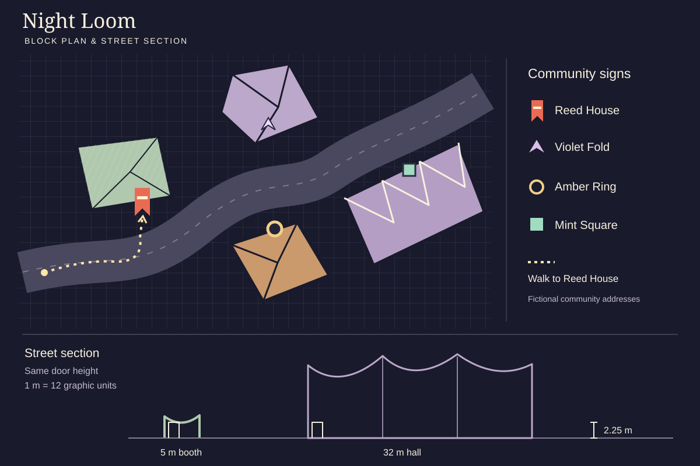

LootTown / Art direction v1.0
A community keeps its flag, from its first listening booth to its largest stage.

Reed House sits on the bend. The white bar and V-cut hem will appear again inside. The green square farther up the lane belongs to a different community.

One player can reach the whole room with a quiet phrase. A late arrival can follow the side aisle into the audience without crossing the performance space.

In this later-size study the flag spans a stage. The band still plays at human scale. A sequence of steel ribs and roof folds carries the room back to the balcony.

Follow the mint cap across the top row. A strap, coat, shoulder fold and mantle change the outline. The lower row studies the difference between playing, listening and cheering.

The community holds its doorway on the street. Its building can grow behind it. The lower section holds both door heights at 2.25 metres.